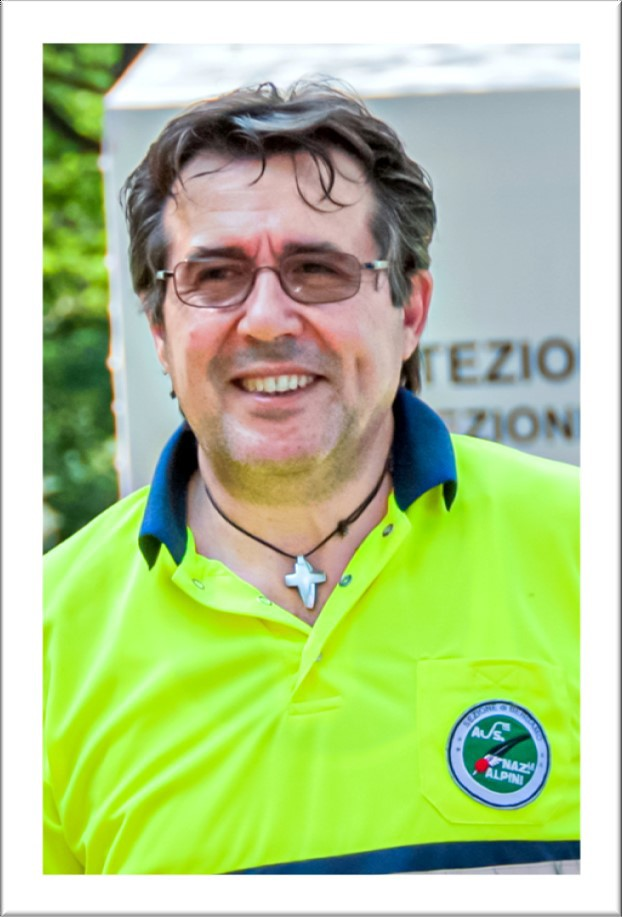
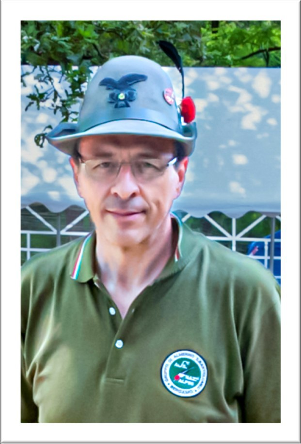
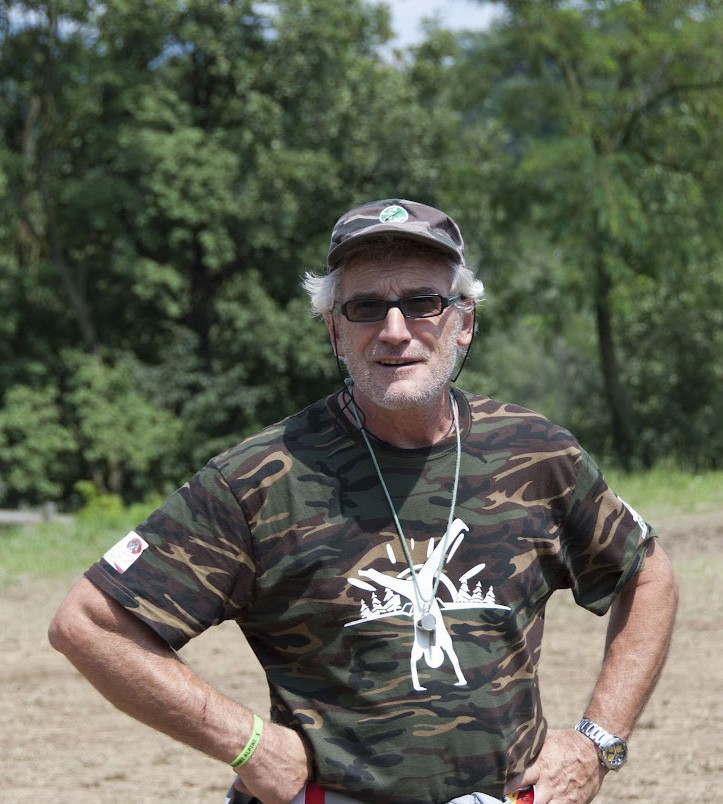
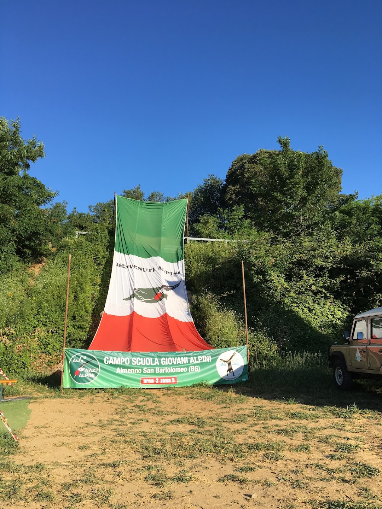
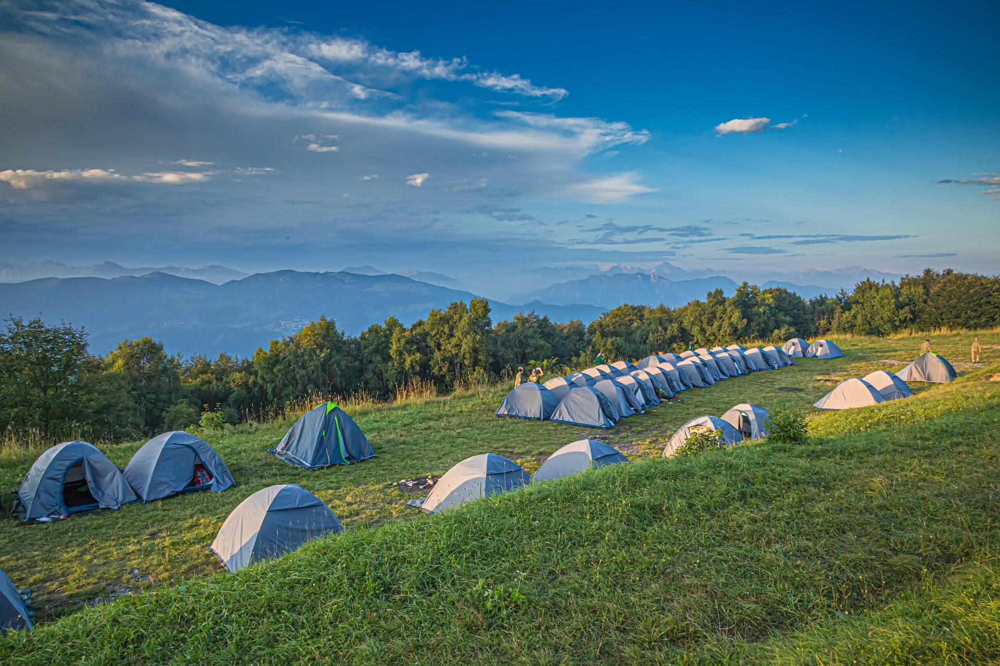
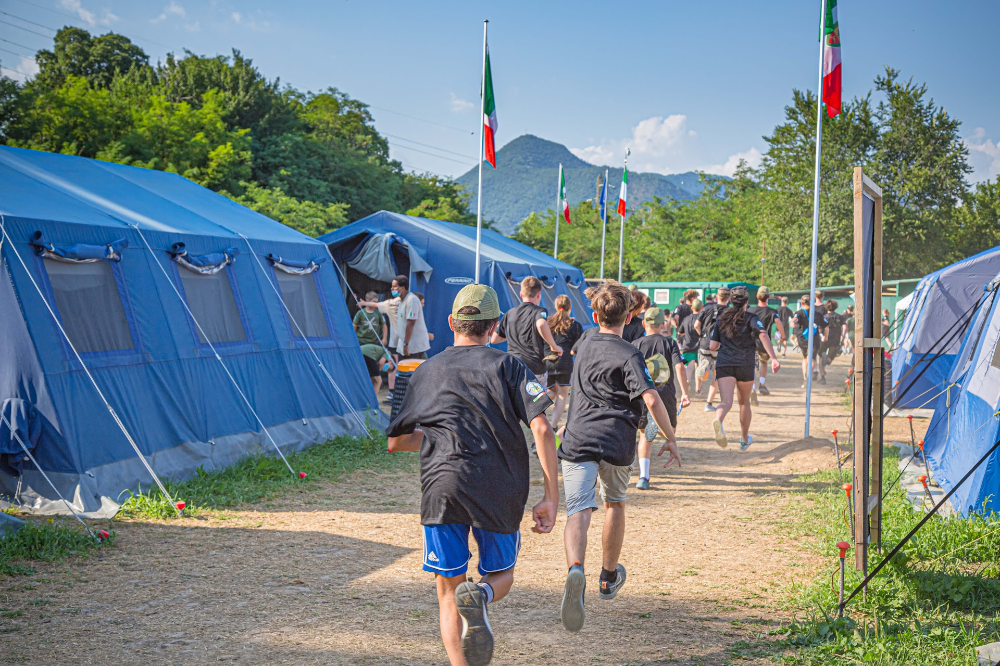
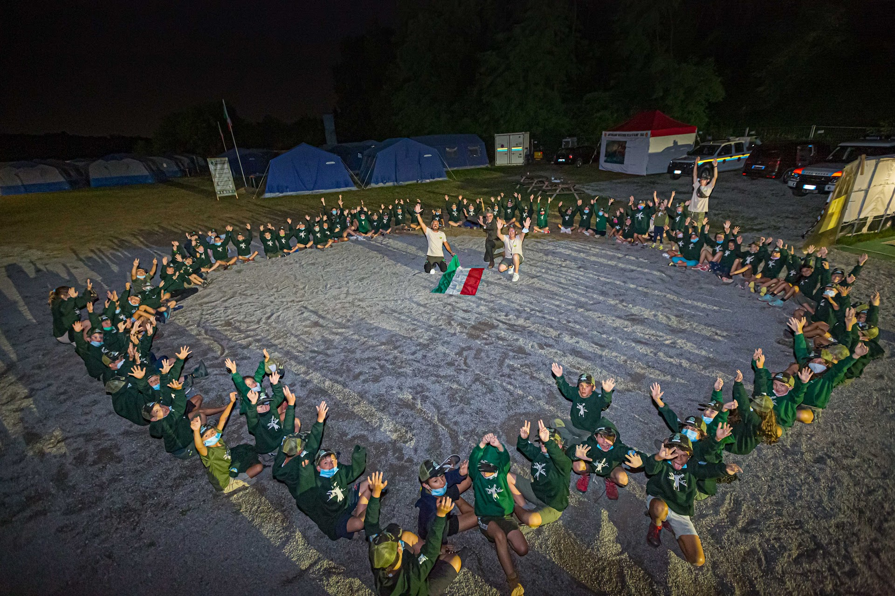

Un'estate di natura, avventura e spirito alpino nell'Oasi del Brembo, per ragazzi e ragazze dagli 8 ai 14 anni. Da oltre 10 edizioni, formiamo i giovani ai valori di comunità, volontariato e rispetto della natura.
« Unus pro omnibus »
Turni del campo scuola e iniziative del Gruppo Alpini di Almenno San Bartolomeo lungo tutto l'anno: preparazione, formazione dei capisquadra, momenti di comunità e il campo estivo.
Le persone che hanno ideato il campo scuola e ne seguono l'organizzazione, edizione dopo edizione. Passa il mouse (o tocca) una foto per scoprire chi è.



Un assaggio delle nostre giornate: natura, attività e vita di comunità.




Un'esperienza formativa che dal 2011 accompagna centinaia di ragazzi ogni estate. Le iscrizioni 2026 non sono ancora aperte: contattaci per informazioni o per essere avvisato quando si apre.